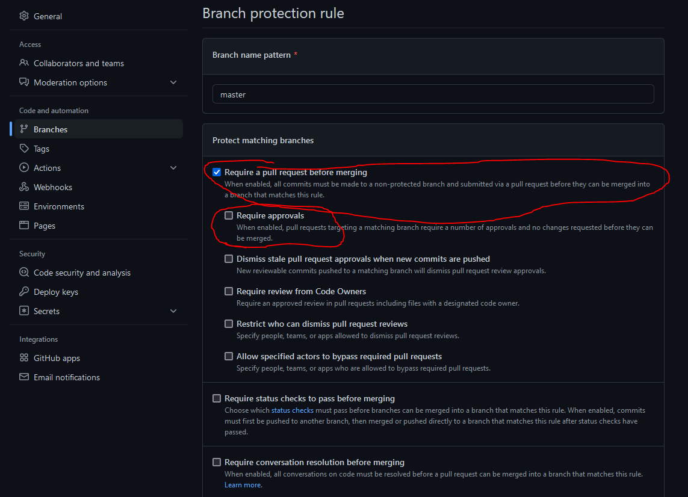

Automate tests
Now we have our tests set up, we can make github run them whenever certain actions occur. A popular way to set this up is to run the tests whenever a pull request is made - that way you can see if that request breaks your code or not.
For this to be effective, it’s a good idea to stop people pushing directly to the main branch (actually, this is probably a good idea in general.) This means that whenever changes are made, they are first pushed to a different branch, then the tests will be automatically run, and - if they pass - you can except the pull request.
Set up main branch protection
In github, make the following changes:
Go settings, branches, branch protection, and add new rule
hint: your ‘main’ branch could be called “main” or “master”, you have to check and update “branch name pattern” accordingly

check ‘Require a pull request….’
uncheck “require approvals”
If you scroll down further, there is another box “Include administrators” - check that one too

Locally: switch to a new branch
If you are currently on the ‘main’ branch on your local machine, this would be a good time to switch since in the future you won’t be able to push from that branch anyway. So make a new branch called e.g. “development” and switch to it.
set up automatic tests
from github.com, click “actions” “new workflow”:

search for python and choose ‘python application’ - this is a basic workflow that by default will checkout our main branch and run some tests on it.

When you click configure, you will be taken to a yml file. you can have a read through this if you want, but for this tutorial replace it with the below:
# run pytest
name: tests
on:
push:
branches: [ master ]
pull_request:
branches: [ master ]
permissions:
contents: read
jobs:
build:
runs-on: ubuntu-latest
steps:
- uses: actions/checkout@v3
- name: Set up Python 3.10
uses: actions/setup-python@v3
with:
python-version: "3.10"
- name: Install dependencies
run: |
python -m pip install --upgrade pip
pip install -r dev_requirements
- name: Test with pytest
run: |
pytest
Compared with the default we have tweaked this a little bit:
We aren’t using pylint, because to be honest it’s doubtful my code would pass its very stringent tests!
I’ve updated the requirements installation
Click start commit then propose changes.

Because we banned commits directly to the main branch, this will open a new branch, and make a pull request from this new branch into main. Click create pull request. Note that the tests will now run automatically.
We haven’t insisted that the tests pass before merging, but we could if we want.
Add a workflow badge
Add the following text to the readme, right next to the ‘coverage’ badge line:

This produces a badge on our readme, so now people know that in addition to the fact that we have implemented some tests and have 100% coverage of our code base, they are running automatically - and passing!
add a coverage report
We can also add a cool test coverage report to our pull requests. edit the yaml file with the below:
- name: Test with pytest
run: |
pytest --cache-clear --cov=app test/ > pytest-coverage.txt
- name: Comment coverage
uses: coroo/pytest-coverage-commentator@v1.0.2